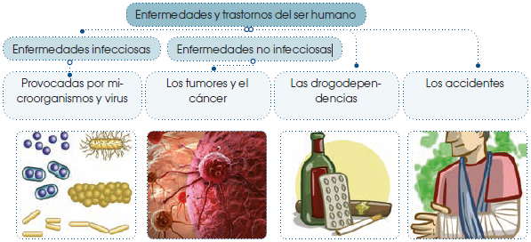
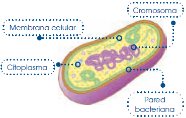
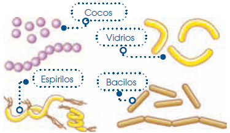
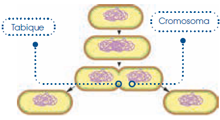
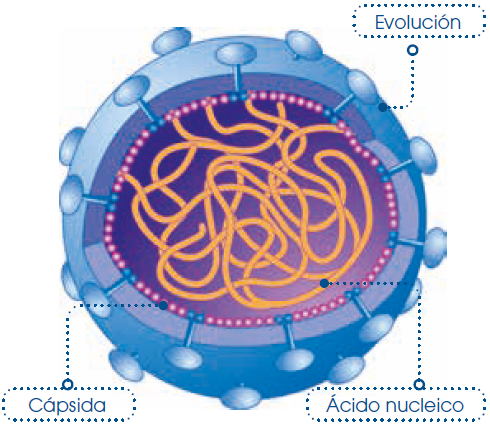
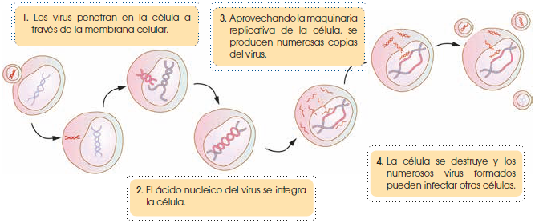
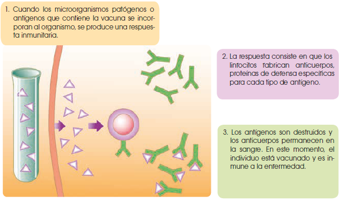
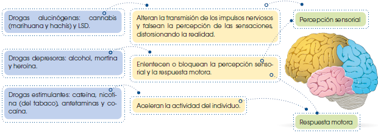
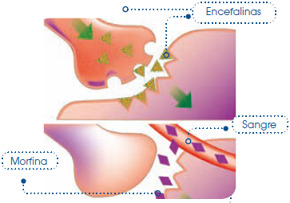
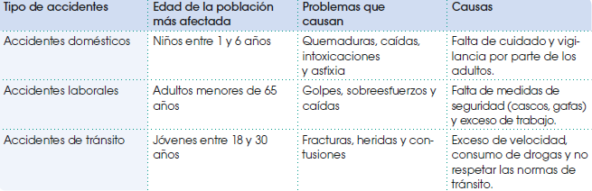

Relaciones humanas y salud sexual
La salud y las enfermedades
Desde el principio de su existencia, el ser humano ha luchado contra las enfermedades y los trastornos que le afectan y ha trabajado para conseguir un mayor bienestar físico, mental y social.
Gracias al progreso económico y social, la humanidad dispone cada vez de más medios para luchar contra los problemas de salud, aunque todavía existen muchos retos, como la accesibilidad de los recursos sanitarios a todas las personas por igual.
La salud
La OMS vela por la salud a nivel global y según esta organización el concepto de salud es:
El estado de completo bienestar físico, mental y social, y no solamente la ausencia de afecciones o enfermedades.
La OMS tiene como objetivo que todos los pueblos puedan gozar del máximo grado de salud posible. Para ello actúa a diferentes niveles, por ejemplo, evitando la extensión de enfermedades entre la población y procurando que los niños de todos los países tengan una buena nutrición.
Según la definición que está en la parte superior, es tan necesario el bienestar mental como el físico, y también influye el entorno en el estado de salud. Así, podemos decir que la salud de las personas depende de los factores siguientes:
• Las características físicas y mentales. Algunas personas son más susceptibles que otras o padecer determinados trastornos; por ejemplo, la predisposición a padecer algunas enfermedades es hereditaria.
• El estilo de vida. Hábitos saludables, como seguir una dieta equilibrada, practicar algún deporte, alternar trabajo y descanso o dormir las horas suficientes, permiten mantener un buen estado de salud.
• El sistema de asistencia sanitaria. Un sistema de asistencia sanitaria eficaz puede prevenir y paliar muchos problemas sanitarios; por ejemplo, el calendario de vacunación de los niños que se sigue en la región, ayuda a evitar y erradicar muchas enfermedades infecciosas. • El entorno social. La sociedad en que vivimos nos proporciona los medios para desarrollar nuestras capacidades, estudiar, trabajar y, por tanto, alcanzar nuestros objetivos. Pero, en ocasiones, también podemos sentirnos presionados por ella, lo que repercute en la salud; por ejemplo, tener problemas con los estudios suele causar decaimiento.
Las enfermedades
La OMS y los sistemas de asistencia sanitaria de los distintos países trabajan para que todos los seres humanos gocemos de buen a salud.
En los países más desarrollados la infraestructura sanitaria, en general, es buena, pero las enfermedades asociadas a la vida sedentaria son un grave problema; sin embargo, en los países en vías de desarrollo, donde la calidad de vida es inferior, no hay una asistencia sanitaria suficiente para atender a toda la población.
Las enfermedades y los trastornos pueden originarse tanto por causas externas como internas en nuestro organismo. Así, el dolor de cabeza puede tener diferentes orígenes, se puede dar por no dormir las horas suficientes e incluso por la aparación de un tumor.
Para poder llevar a cabo las diferentes funciones vitales es necesario que todos los órganos, sistemas y aparatos trabajen de forma coordinada. Por esta razón, una enfermedad que afecte a un órgano puede tener consecuencias sobre el funcionamiento de todo nuestro organismo. Por ejemplo, el mal funcionamiento de los riñones hace que la sangre no se limpie correctamente, lo que perjudica al resto del cuerpo.
Existen enfermedades asociadas a cada sistema. En esta unidad vamos a estudiar algunas enfermedades y trastornos clasificados según su origen. Los grupos que vamos a describir son:
Enfermedades y trastornos del ser humano
Enfermedades infecciosas: Provocadas por microorganismos y virus
Enfermedades no infecciosas: Los tumores y el cáncer, Las drogodependencias, Los accidentes.

El estrés
El estrés es un estado de tensión del organismo provocado por un esfuerzo físico, psíquico o emocional excesivo y continuado. Este malestar es muy frecuente en nuestra sociedad y es la causa de numerosos trastornos y enfermedades como depresión, enfermedades cardiovasculares, trastornos del sistema digestivo, etc.
Enfermedad: Es la alteración leve o grave del funcionamiento de nuestro organismo.
Las enfermedades infecciosas
Las enfermedades infecciosas son alteraciones de la salud causadas por microorganismos y virus. Se caracterizan por ser transmisibles, es decir, que pueden pasar de una persona enferma a otra sana.
Los microorganismos son seres vivos microscópicos que pueden vivir en diversos medios, como el agua, el suelo y los seres vivos. Las bacterias, los hongos microscópicos y los protozoos son microorganismos, algunos de ellos son patógenos. Los virus son estructuras microscópicas muy sencillas que necesitan a los seres vivos para poder existir y que causan muchas enfermedades.
Los microorganismos y virus patógenos
Los microorganismos y virus patógenos obtienen nutrientes y se reproducen a expensas del ser humano, por ello se les llama parásitos; el ser humano, en cambio, saleafectado, por lo que se denomina hospedador. Veamos las características de los siguientes patógenos: bacterias, protozoos, hongos y virus.
• Las bacterias son seres vivos formados por una sola célula de estructura muy sencilla, llamada célula procariota. Estas son sus características:
Estructura celular
La célula procariota mide entre 1 y 10 µm y es de menor tamaño que la célula eucariota. Lo más destacado de su estructura es:
• No presenta envoltura nuclear.
• Su material genético es un solo cromosoma, formado por una cadena de ADN, que dirige todas las funciones de la célula procariota.
• Presenta una pared bacteriana que envuelve la membrana celular. Está formada por una sustancia llamada mureína que da rigidez a la célula.

Forma de las bacterias
Las bacterias pueden presentar diversas formas:
• Bacilos: tienen forma de bastón.
• Cocos: su forma es esférica.
• Espirilos: tienen forma de tirabuzón.
• Vibrios: recuerdan a una coma de ortografía.
En ocasiones, el nombre de la bacteria está asociado a su forma. Este es el caso de la bacteria Vibrio cholerae, que produce la enfermedad del cólera.

Funciones vitales
• Función de nutrición. Algunas bacterias son autótrofas y se nutren de materia inorgánica; otras son heterótrofas y necesitan sustancias orgánicas.
• Función de relación. Las bacterias pueden resistir condiciones adversas, como la sequedad o la falta de nutrientes, formando esporas.
• Función de reproducción. De una célula progenitora se obtienen dos células hijas. El cromosoma se duplica y se forma un tabique de mureína que separa las dos células nuevas.

La mayoría de las bacterias son de vida libre, es decir, no necesitan parasitar otra célula para vivir. No obstante, algunas de las que son patógenas causan enfermedades graves como la tuberculosis, la sífilis o el tétanos.
• Los protozoos son organismos unicelulares eucariotas. Algunos poseen cilios o flagelos para desplazarse. Hay especies de protozoos parásitas del ser humano, como Trypanosoma sp., que produce la llamada enfermedad del sueño. El protozoo Plasmodium sp. provoca la malaria.
• Los hongos son un grupo de organismos eucariotas con representantes unicelulares y pluricelulares. Algunos hongos son parásitos del ser humano y le provocan infecciones llamadas micosis. Normalmente las micosis afectan a la piel a las mucosas de la boca o de los genitales, y producen fuertes picores.
• Los virus tienen una estructura muy sencilla, distinta a la de una célula. En su forma más simple solo poseen una cápsida proteica que envuelve y protege a un ácido nucleico. Algunos de ellos, como es el caso de los virus de la gripe o del VIH, presentan un recubrimiento membranoso llamado envoltura.
El tamaño de los virus es muy pequeño, por ello solo pueden observarse por microscopio electrónico.

Los virus no se consideran propiamente seres vivos, ya que no llevan a cabo las funciones de nutrición y relación. Puede considerarse que se reproducen, ya que se multiplican, pero siempre en el interior de las células, por lo que todos los virus son parásitos obligados de los seres vivos. Hay muchos virus que producen enfermedades al ser humano, como los virus de la gripe.
Este es el proceso mediante el que un virus infecta a una célula:

- Los virus penetran en la célula a través de la membrana celular.
- El ácido nucleico del virus se integra la célula.
- Aprovechando la maquinaria replicativa de la célula, se producen numerosas copias del virus.
- La célula se destruye y los numerosos virus formados pueden infectar otras células.
El proceso de una enfermedad infecciosa
Las fases de una enfermedad infecciosa, desde que se contrae hasta su curación, son:
• Contagio: Es la transmisión de la enfermedad a una persona sana. Puede producirse de forma directa, a través de la sangre, la saliva u otras secreciones de una persona infectada, o de forma indirecta, si el contagio se produce a través de un elemento transmisor, como el agua.
• Período de incubación: Transcurre desde el momento del contagio hasta que se manifiesta la enfermedad.
• Período de estado: Es el tiempo de duración de la enfermedad. Se manifiestan los síntomas que causan molestias al enfermo.
• Período de resolución: Es la fase de curación y puede tener una duración variada.
• Período de convalecencia: Se han eliminado los agentes patógenos, pero el organismo necesita un tiempo para recuperarase totalmente.
Veamos las características de algunas enfermedades infecciosas:
Agente patógeno
Contagio
Problemas que causa
Gastroenteritis
Agente patógeno: La bacteria Salmonella sp. Contagio: Indirecto, bebiendo agua y comiendo alimentos contaminados. Problemas que causa: Se inflama la mucosa gástrica y la intestinal, por lo que se producen diarreas, vómitos y fiebre.
Meningitis
Agente patógeno: La bacteria Neisseria meningitidis. Contagio: Directo, inhalando gotitas expulsadas por una persona enferma al toser o estornudar. Problemas que causa: Se inflaman las meninges, por lo que se produce fiebre, dolores de cabeza, vómitos y rigidez de nuca.
Candidiasis
Agente patógeno: El hongo Candida albicans. Contagio: Indirecto, a través de prendas de vestir contaminadas. Directo, por relaciones sexuales. Problemas que causa: El hongo se extiende por la piel y las mucosas, y provoca intensos picores.
Malaria o paludismo
Agente patógeno: El protozoo Plasmodium vivax. Contagio: Indirecto, por la picadura de un mosquito. Se producen períodos intermitentes de fiebre alta, las crisis palúdicas. Problemas que causa: El protozoo destruye los eritrocitos y perjudica al hígado.
Sarampión
Agente patógeno: Virus del grupo Paramyxovirus. Contagio: Directo, inhalando gotitas expulsadas por una persona enferma al toser o estornudar. Problemas que causa: En primer lugar, produce una inflamación de las mucosas respiratorias, luego una erupción en la piel y fiebre.
Gripe
Agente patógeno: Virus del grupo Orthomyxovirus. Contagio: Directo, inhalando gotitas expulsadas por una persona enferma al toser o estornudar. Problemas que causa: Afecta principalmente la mucosa respiratoria, produciendo tos, estornudos, mucosidad, fiebre y dolor de cabeza.
La prevención
Para evitar el contagio de enfermedades, podemos poner en práctica una serie de medidas de prevención. Algunas de las más habituales son la práctica de hábitos de higiene y la administración de vacunas.
Los hábitos de higiene, como lavarse las manos antes de tomar alimentos y ducharse con frecuencia, tienen la finalidad de impedir el contacto prolongado con agentes patógenos. También consideramos como un hábito de higiene: evitar el contacto con utensilios que puedan contagiar enfermedades, como vasos y cubiertos usados o toallas utilizadas en la playa o la piscina.
La administración de vacunas es la principal medida preventiva por parte de la asistencia sanitaria pública. Las vacunas son unas sustancias preparadas con los microorganismos patógenos, inactivos o debilitados, causantes de la enfermedad que se quiere evitar, o bien con partes de dichos microorganismos.
Las vacunas proporcionan defensas a las personas sanas para que, en caso de ser infectadas por un agente patógeno, el sistema inmunológico pueda eliminarlo y evitar que se manifieste la enfermedad. A veces, no se impide que la enfermedad se presente, pero lo hace de forma menos agresiva. Veamos el modo de actuación de las vacunas:

- Cuando los microorganismos patógenos o antígenos que contiene la vacuna se incorporan al organismo, se produce una respuesta inmunitaria.
- La respuesta consiste en que los linfocitos fabrican anticuerpos, proteínas de defensa específicas para cada tipo de antígeno.
- Los antígenos son destruidos y los anticuerpos permanecen en la sangre. En este momento, el individuo está vacunado y es inmune a la enfermedad.
A partir de entonces, si el organismo entra en contacto con el patógeno, contra el cual está vacunado, se producirá una respuesta inmediata y los anticuerpos impedirán que se establezca el patógeno y, por tanto, se manifieste la enfermedad. Las vacunas pueden conferir inmunidad durante mucho tiempo o bien, tener efecto permanente.
Se han establecido programas de vacunación para evitar algunas enfermedades, que hace unos años eran corrientes en la infancia, como el sarampión y la parotiditis. También se administran vacunas, ocasionalmente, a personas que han de viajar o que corren el riesgo de contraer una enfermedad.
Tratamiento
Una vez se ha contraído una enfermedad, se aconseja la visita al médico que, cuando diagnostique la dolencia, decidirá cuál es el tratamiento adecuado. El tratamiento más frecuente es la administración de medicamentos. En algunos casos, puede ser necesario como tratamiento el trasplante de órganos, tejidos o células.
• Los medicamentos son un conjunto de varias sustancias. De todas ellas, la responsable de la acción se llama principio activo. La función de los medicamentos es prevenir, aliviar o curar enfermedades o bien, sus síntomas.
Un tipo específico de medicamento son los antibióticos, compuestos que destruyen las bacterias o detienen su crecimiento y que, por tanto, curan ciertas enfermedades infecciosas.
• El trasplante de órganos, tejidos o células es una técnica médica que consiste en sustituir un órgano, tejido o células dañados por otro sano.
Es posible trasplantar órganos, como el corazón, el pulmón, el riñón, el páncreas y el hígado; tejidos, como la médula ósea y la córnea; y células, como las de la glándula suprarrenal y las del cordón umbilical.
El principal problema para realizar con éxito un trasplante es el rechazo inmunitario.
Este puede producirse si los tejidos del órgano trasplantado son reconocidos como antígenos por el sistema inmunitario, el cual elabora anticuerpos para destruir el cuerpo extraño. Si esto ocurre, se provocan graves trastornos.
Los órganos utilizados en los trasplantes proceden de otro ser humano, que ha fallecido o de otras personas vivas. En ambos casos, los trasplantes se llevan a cabo gracias a donantes, que manifiestan su voluntad de ceder uno o varios órganos. Este es un acto solidario que permite salvar muchas vidas.
La donación de sangre
La administración de sangre o algunos de sus derivados es un tratamiento que se aplica en numerosas enfermedades.
Aunque existen diversos sustitutivos de la sangre y del plasma sanguíneo, la obtención de sangre humana sigue siendo imprescindible.
Enfermedades no infecciosas
Existe un amplio grupo de enfermedades que no pueden contagiarse, son las enfermedades no infecciosas.
Entre estas enfermedades destacamos las cardiovasculares, es decir, las que afectan al corazón y a los vasos sanguíneos; los tumores; y el cáncer.
Las enfermedades cardiovasculares son la principal causa de muerte en los países de Europa y América del Norte. Aunque, en general, estas dolencias afectan a la población adulta; las causas de los problemas cardiovasculares se deben a malos hábitos de salud que se adquieren en la juventud, por ejemplo, una dieta poco variada con exceso de grasas, una vida sedentaria y el consumo de tabaco.
Una de las enfermedades cardiovasculares, más graves, es el infarto del miocardio.
A continuación, estudiaremos a los tumores y al cáncer, por tratarse de una de las causas más significativas de mortalidad.
Los tumores y el cáncer
Las células que forman parte de los tejidos viven y se reproducen durante un tiempo y, finalmente, mueren.
En ocasiones, algunas células se transforman y los mecanismos que controlan la división celular se modifican. El ritmo de la mitosis se acelera, por encima de los niveles normales, y por este motivo, las células crecen de forma acelerada, desorganizada e incontrolada, invadiendo el espacio de otras células, por lo que se forma un tumor:
• Un tumor es un tejido formado por células que proliferan de un modo incontrolado.
Cuando las células del tumor invaden a otros tejidos sanos se trata de un tumor maligno o cáncer.
La extensión de las células cancerosas a otras zonas del organismo se conoce como metástasis. Esta proliferación celular es la que, a menudo, pone en peligro la vida del individuo que la padece.
Hablamos de distintos tipos de cáncer según la localización del tumor en el cuerpo.
No todos los tumores son malignos. Algunos son simples verrugas o quistes y no causan problemas de salud, aunque suelen extirparse por motivos estéticos o para prevenir una posible malignización en el futuro.
Los tumores malignos, como el cáncer de pulmón, el cáncer de piel y el de mama, pueden ser muy graves y de difícil curación, incluso pueden causar la muerte. Sin embargo, en la actualidad, muchos tipos de cáncer pueden curarse.
Algunos tumores malignos son de origen hereditario. Además, existen diversos factores que influyen en el desarrollo del cáncer. Estos factores se denominan agentes carcinógenos, y algunos de ellos son: componentes del humo del tabaco, diferentes tipos de radiación, un exceso de grasa en la dieta, el alcohol, etc.
Existe un grupo de enfermedades relacionado con ciertas anomalías del sistema inmunitario. Según las características de la situación anómala, hablamos de:
• Alergias: El sistema inmune reconoce como antígenos a moléculas, que en un principio, son inofensivas para el organismo como el polen o ciertos alimentos.
• Autoinmunidad: Se da cuando los linfocitos sintetizan anticuerpos contra las células del organismo, llegando a destruir los tejidos propios. La esclerosis múltiple es una enfermedad autoinmune.
• Inmunodeficiencias: Alteración del sistema inmunitario que da lugar a una respuesta insuficiente frente el ataque de los agentes patógenos.
Vamos a conocer las características de estos agentes carcinógenos:
El tabaco: El consumo de tabaco es el factor que más influye en la aparición del cáncer de pulmón y otros tumores malignos del sistema respiratorio. Al fumar un cigarrillo, se aspiran numerosas sustancias, entre las que se hallan los alquitranes, que provocan alteraciones en el ADN de las células. Cuantos más cigarrillos se fumen y más temprana sea la edad de inicio del fumador, mayor es el riesgo de contraer cáncer.
Los rayos solares: Una exposición excesiva a los rayos solares influye en la aparición del cáncer de piel. Las radiaciones ultravioleta del Sol pueden alterar el ADN de las células, lo que favorece una reproducción celular descontrolada.
Una dieta desequilibrada: Una dieta rica en grasas y pobre en frutas y hortalizas favorece el desarrollo de cáncer de colon y de recto. Las grasas, tomadas en exceso, producen sustancias que pueden dañar el intestino. Por otro lado, si no se consume suficiente fibra vegetal, se favorece el estreñimiento y la acción nociva de las grasas. Un consumo de alcohol excesivo puede favorecer el desarrollo del cáncer de hígado o de páncreas.
Un estilo de vida saludable, evitando los agentes carcinógenos, reduce la probabilidad de formación de tumores malignos. Si se desarrolla el tumor, un paso importante para su curación es su detección en las primeras fases.
Existen distintos tratamientos para curar el cáncer, como una intervención quirúrgica, la radioterapia y la quimioterapia. En muchos casos se combinan estos tratamientos para aumentar el efecto terapéutico.
La intervención quirúrgica consiste en la eliminación del tumor mediante su extracción.
La radioterapia es un tratamiento con radiaciones, que incide sobre las células, alterando su ADN y destruyéndolas. Este tratamiento, al mismo tiempo que elimina células enfermas, puede afectar a células sanas y provocar efectos secundarios como reacciones en la piel, cansancio y más.
La quimioterapia es un tratamiento en el que se emplea una gran variedad de fármacos que destruyen las células cancerosas. Para cada tipo de tumor, se administra una determinada combinación de fármacos. En este caso, también pueden verse afectadas células sanas y presentarse alteraciones del sistema digestivo, alteraciones del sistema inmunitario, en otros.
Drogodependencias
El consumo de drogas causa alteraciones en el sistema nervioso, que pueden ser transitorias, es decir, desaparecer al cabo de un tiempo, o crónicas, y producir trastornos de forma permanente.
Las drogas son sustancias que actúan sobre el sistema nervioso alterando el comportamiento y los procesos del pensamiento.
Las drogas actúan sobre el sistema nervioso del mismo modo que los neurotransmisores, pasan de una neurona a otra a través de las sinapsis.
Las drogas pueden tener diferentes efectos sobre el sistema nervioso central. Según estos efectos, pueden ser alucinógenas, depresoras o estimulantes.

Drogas alucinógenas: cannabis (marihuana y hachís) y LSD. Alteran la transmisión de los impulsos nerviosos y falsean la percepción de las sensaciones, distorsionando la realidad. Percepción sensorial
Drogas depresoras: alcohol, morfina y heroína. Enlentecen o bloquean la percepción sensorial y la respuesta motora. Percepción sensorial y Respuesta motora.
Drogas estimulantes: cafeína, nicotina (del tabaco), anfetaminas y cocaína. Aceleran la actividad del individuo. Respuesta motora.
Los efectos de las drogas pueden producirse aunque se trate de un consumo ocasional o esporádico. Cabe la posibilidad de que un consumo ocasional no conlleve la necesidad de volver a consumir, pero también es peligroso. Por ejemplo, un consumo excesivo de alcohol en una fiesta puede ser un hecho esporádico, pero puede provocar un estado de coma.
Cuando se siente la necesidad de volver a consumir una droga, se habla de adicción o drogodependencia. La adicción se define como un estado de dependencia respecto a una sustancia, que escapa al control de la voluntad. Cuando los efectos de la droga desaparecen se siente la necesidad de volver a consumir. El consumo repetido de una droga conduce a la adicción.
La adicción produce dos tipos de trastornos, la dependencia y la tolerancia.

• La dependencia puede ser física o psíquica. La dependencia física se produce porque el cuerpo se acostumbra al efecto de una droga y, si cesa el consumo, se producen graves alteraciones conocidas como síndrome de abstinencia.
La dependencia psíquica es la sensación de mejora en el estado de ánimo cuando se consume la droga, que empuja al adicto a volverla a consumir.
• La tolerancia es el proceso de adaptación del organismo a una droga. El sistema nervioso se vuelve menos sensible, debido a que las neuronas están a menudo bajo los efectos de la droga. El cuerpo se habitúa a una determinada dosis y ya no se consigue el efecto deseado por el consumidor. Cada vez se consumen dosis más altas para conseguir dicho efecto.
Además de graves problemas de salud, la adicción a una droga conlleva problemas familiares y sociales por la aparición de comportamientos agresivos, fracaso escolar, pérdida de memoria, problemas laborables, accidentes de tráfico, comportamientos delictivos, etcétera.
Las drogas
En nuestra sociedad, las drogas más accesibles son el tabaco y el alcohol. Podemos comprar cigarrillos y bebidas alcohólicas en muchos establecimientos, como bares y restaurantes. Además, muchas personas comienzan a fumar o a beber por la influencia del ambiente que les rodea. No por ser permitidas, estas drogas son menos perjudiciales.
Otras drogas no legales, también frecuentes en nuestra sociedad, son el cannabis, la cocaína y las anfetaminas.
Veamos cuáles son las características y los efectos de cada una.
Tabaco
Contiene nicotina, una droga estimulante del sistema nervioso. Además, los alquitranes, gases como el monóxido de carbono y numerosas sustancias irritantes provocan enfermedades como la bronquitis crónica, el infarto y el cáncer de pulmón.
Cuando baja la concentración de nicotina en la sangre, los fumadores sienten desasosiego y necesidad de fumar.
Alcohol
Es una droga depresora. Los efectos que produce una misma cantidad de alcohol varían según la edad, el peso y el sexo de las personas. La intoxicación aguda se produce si se toma mucho alcohol en un corto intervalo de tiempo; esta intoxicación puede llevar al coma etílico e incluso a la muerte. El alcohólico sufre una transformación del carácter y se vuelve irritable. Si deja de beber sufre el síndrome de abstinencia que provoca náuseas, vómitos y temblores.
También puede tener alucinaciones.
Cannabis
Ya sea en forma de marihuana o de hachís, se trata de una droga alucinógena que provoca bronquitis, hipertensión, taquicardia, así como alteraciones sensoriales, descoordinación de movimientos y reacciones de pánico y ansiedad.
Cocaína
Es una droga estimulante que provoca pérdida de apetito, insomnio, infarto, perforación del tabique nasal y graves trastornos psíquicos como la depresión.
Anfetaminas
Son drogas estimulantes que constituyen el principal componente de las denominadas drogas de síntesis. Los efectos pueden ser convulsiones, arritmia, aumento de la temperatura, hemorragias cerebrales, crisis de ansiedad y trastornos depresivos.
El consumo de drogas y la desintoxicación
Consumir drogas una vez no significa ser adicto, pero la repetición en el consumo predispone a la adicción. El consumo de drogas suele iniciarse durante la adolescencia, normalmente, debido a la presión del grupo de amistades o a una baja autoestima.
No todas las personas son susceptibles a iniciarse en el consumo de drogas, existen diversos factores que pueden predisponer a este. Estos factores son el ambiente, la personalidad y el tipo de droga que se consume.
Ambiente
La familia y los amigos influyen en nuestras actitudes. Muchas veces, bebemos alcohol, fumamos tabaco o hachís para reforzar el sentimiento de grupo, vencer el aburrimiento o evadir problemas.
La publicidad de bebidas alcohólicas y de tabaco es nociva porque relaciona el consumo de estas sustancias con el éxito personal y social.
Tipo de droga
La facilidad de disponer de la droga, así como el carisma que rodea a las personas que la consumen, influye en su consumo.
En el caso de drogas legales, como el tabaco y el alcohol, también influye su presentación en el mercado; es decir, envoltorios atractivos, fuertes campañas de publicidad y más.
Personalidad
Las deficiencias afectivas, la inseguridad, entre otros pueden hacer que una persona sea más vulnerable a caer en el consumo de estas sustancias. Consumir drogas por el deseo de sentir nuevas sensaciones o para huir de los problemas conlleva que, a la larga, las sensaciones sean desagradables y perjudiciales, y que los problemas no se solucionen, sino que, por el contrario, se agraven.
El consumo de drogas no lleva al éxito personal y social, sino todo lo contrario, desestabiliza la personalidad y conduce a la marginación social.
La adicción a las drogas es una enfermedad y para su curación es necesario tomar conciencia del problema, desear curarse y aceptar la ayuda necesaria. Para las personas que desean curar su adicción existen tratamientos de desintoxicación.
Los accidentes
Los accidentes no son enfermedades, pero producen trastornos y dolencias que afectan a la salud de las personas y, en ocasiones, son causa de muerte.
Los accidentes pueden clasificarse en tres grupos, según el lugar donde ocurren: accidentes domésticos, que se producen en las casas; accidentes laborales, que se producen en el puesto de trabajo, y accidentes de tránsito.
Accidentes domésticos Niños entre 1 y 6 años Quemaduras, caídas, intoxicaciones y asfixia Falta de cuidado y vigilancia por parte de los adultos.
Accidentes laborales Adultos menores de 65 años Golpes, sobreesfuerzos y caídas Falta de medidas de seguridad (cascos, gafas) y exceso de trabajo.
Accidentes de tránsito Jóvenes entre 18 y 30 años Fracturas, heridas y contusiones Exceso de velocidad, consumo de drogas y no respetar las normas de tránsito.

Los accidentes más comunes son los domésticos y los laborales, pero los accidentes de tránsito son los de mayor gravedad, ya que provocan que se presentan más fallecimientos, especialmente entre los jóvenes.
Los accidentes pueden causar problemas de salud como intoxicaciones y heridas. Las lesiones producidas por golpes reciben el nombre general de traumatismos.
Algunos de estos traumatismos son lesiones como fracturas y esguinces, que vimos anteriormente. A veces, los traumatismos son muy violentos y pueden afectar a órganos internos, como el encéfalo o la médula espinal. En estos casos, el accidente puede tener graves consecuencias, y llegar a causar la muerte o la parálisis permanente de la persona accidentada.
Prevención de los accidentes
Muchos accidentes pueden evitarse si las personas respetan unas normas básicas de seguridad. Veamos algunas de ellas.
En casa:
• Las sustancias tóxicas y los medicamentos deben estar fuera del alcance de los niños.
• Hay que tener precaución con los recipientes que están en el fuego y en el uso de los aparatos eléctricos.
En el trabajo:
• Las personas deben conocer los riesgos de su trabajo.
• Han de usarse medidas de seguridad, como arneses y cascos, en caso de peligro de caídas.
En la vía pública:
• Deben respetarse los pasos de peatones, los semáforos y las señales de tráfico.
• Ha de utilizarse el cinturón en el vehículo y el casco en las motocicletas y bicicletas.
Primeros auxilios
En el caso de un accidente puede ser vital prestar primeros auxilios al accidentado, mientras se espera ayuda médica.
Los primeros auxilios son el conjunto de técnicas que se prestan a una persona accidentada hasta la llegada de la asistencia médica.
Hay que estar preparado para poder prestar primeros auxilios. Se debe actuar con rapidez, pero sabiendo qué se debe hacer y qué no. Antes de aplicarlos, debemos tener la seguridad de que tanto la persona accidentada como nosotros estamos fuera de todo peligro, y avisar a los servicios de emergencia.
Algunas técnicas sencillas de primeros auxilios son:
• Parar hemorragias:
• Si la hemorragia se localiza en una extremidad, debemos elevarla.
• Presionar la herida con una gasa unos minutos.
• En el caso de que la hemorragia no cese, presionar los puntos de compresión arterial, como se muestra en el dibujo.
• Curar heridas:
• Lavarse bien las manos.
• Limpiar la herida con una gasa estéril y antiséptico, como la povidona yodada.
• Dejar al aire la herida si no hay riesgo de infección.
• No utilizar: algodón, pomadas, alcohol.
• Tratar contusiones:
• Inmovilizar la zona afectada.
• Aplicar compresas frías o hielo.
• No dar masajes ni calor, ni pinchar los hematomas.
• Tratar quemaduras:
• Enfriar la quemadura con agua durante 10 minutos. En caso de no desaparecer el dolor lavar más tiempo. Si la quemadura es producida por un producto químico lavar durante 15 o 20 minutos.
• Cubrir la zona afectada con apósitos.
• No pinchar las ampollas que puedan aparecer.
El botiquín
Es el material imprescindible de primeros auxilios y se debe disponer de uno en el centro escolar, en el centro de trabajo, en casa, en el auto, etc.
Sistemas de salud en Ecuador
El Seguro Social Ecuatoriano surge en marzo de 1928, en el Gobierno de Isidro Ayora. En la Constitución de 2008 se estableció un nuevo Sistema de Inclusión y Equidad Social, dentro del cual está incluida la sección de salud.
El sistema de provisión de los servicios de la salud se caracteriza principalmente por la fragmentación y la segmentación. Cada institución dentro del sistema de salud mantiene un esquema de organización muy estricto mediante una gestión y control de financiamientos muy efectivos.
Existen determinantes muy importantes dentro de este sistema. Estos incluyen los políticos, económicos, sociales y medioambientales.
Los determinantes políticos están directamente asociados con los problemas en la gobernabilidad, violencia social e incremento de la corrupción, lo que genera una inestabilidad administrativa y por ende la gestión pública se ve truncada. Este determinante va de la mano con los determinantes económicos y probablemente sean los más importantes para mantener una continuidad en los sistemas de salud del país.
En los determinantes económicos, probablemente, los factores que más afectan al sistema de salud son el desempleo y la pobreza. Cuando inicio la dolarización en Ecuador fue un período de cambios y de mucho desempleo inicialmente; sin embargo, las condiciones fueron mejorando a futuro. Disminuyó el desempleo y, por lo tanto, hubo una mayor aportación frente al ámbito de la salud.
Dentro de los determinantes sociales, los principales problemas que afectan al sector de la salud son los altos niveles de pobreza en el país y el aumento significativo de indigentes y la falta de educación. En la última década, comenzaron a disminuir los niveles de pobreza y extrema pobreza de una manera significativa y esto se debe a que, a partir de esos años, comienza una gran inversión petrolera en el país, además de un crecimiento en las remesas de los inmigrantes, lo que ha ayudado a tener más ingresos al país y, por lo tanto, una mayor aportación al Instituto Ecuatoriano de Seguridad Social (IESS).
Los retos y desafíos del sistema de salud ecuatoriano a futuro incluyen el aumento de los costos del sistema de salud, el envejecimiento de la población, el cambio del perfil epidemiológico, un modelo de atención centrado en la curación, cambios culturales y sociales, presencia de nuevas tecnologías, entre otros.
Además, es muy importante tomar en cuenta que los sistemas de salud van cambiando conforme las necesidades de la población; sin embargo, debe existir una línea base concreta y establecida para mantener una buena gestión y que en un futuro todos tengan acceso a un sistema de calidad.
La sexualidad
La sexualidad hace referencia a las características físicas y psicológicas, propias de cada sexo; al comportamiento relacionado con la atracción entre dos personas; y a las relaciones sexuales.
La sexualidad está presente durante toda la vida del ser humano; sin embargo, se manifiesta principalmente a partir de la pubertad.
En las personas, las relaciones sexuales no tienen como único fin la reproducción, ya que en ellas intervienen una serie de factores psíquicos y emocionales que complementan a los puramente biológicos. Estas son una forma de comunicación entre dos personas que expresan sus sentimientos.
La relación sexual no es únicamente el coito; el cariño y la ternura son también necesarios para disfrutar de este, de una forma más completa. Además, son imprescindibles el acuerdo, la complicidad y el respeto mutuo, ya que nunca puede llevarse a cabo una acción en contra de la voluntad de la otra persona.
Como es conocido, las relaciones sexuales pueden conducir a un embarazo, existen diversas acciones destinadas a incrementar las posibilidades de tener un hijo o, bien, a evitar un embarazo. En el primer caso hablamos de técnicas de reproducción asistida y, en el segundo, de métodos anticonceptivos.
En este apartado explicaremos: los principales cambios que tienen lugar en la pubertad, algunas técnicas de reproducción asistida y los métodos anticonceptivos.
La pubertad
La pubertad es una etapa de la vida que comprende un período entre los 10 y los 18 a 20 años aproximadamente; en él tiene lugar: el desarrollo del sistema reproductor, se completa el crecimiento y se adquieren las características físicas propias de cada sexo.
Los principales cambios físicos que tienen lugar en esta etapa son distintos entre adolescentes.
Cambios físicos en las chicas
• Aumento del peso y la talla.
• Aparece vello en el pubis y las axilas.
• Se ensancha la pelvis.
• Aumenta el tejido adiposo en caderas y pechos.
• Maduración de los óvulos y las menstruaciones.
Cambios físicos en los chicos
• Aumento del peso y la talla.
• Aparece vello en el cuerpo: cara, axilas y pubis.
• La voz se hace más grave.
• Se ensancha la espalda y aumenta la musculatura.
• Producción de espermatozoides y primeras eyaculaciones.
Cambios psicológicos
En la pubertad también se producen cambios que repercuten en la personalidad y en las relaciones con los demás, como:
• Necesidad de independencia respecto al entorno familiar próximo. Se busca soledad e intimidad.
• Valoración de la amistad. Se necesita sentir afecto de las personas, normalmente de la misma edad.
• Aparecen sentimientos intensos relacionados con el amor.
• Se siente interés por las cuestiones relacionadas con el sexo.
• Nacen inquietudes sobre temas trascendentes: el sentido de la vida, la justicia, la libertad, etcétera.
• Se crean ideales sobre temas sociales, políticos, entre otros.
La heterosexualidad es la orientación sexual en la que las personas se sienten atraídas por otras del sexo opuesto. La homosexualidad es la orientación sexual en la que las personas se sienten atraídas por otras del mismo sexo.
Existen también otros tipos de orientaciones sexuales como la bisexualidad, transexualidad, asexualidad, transgénero entre otras menos comunes.
Entre los 16 y 18 años, la mayoría de los adolescentes suele haber completado el desarrollo del sistema reproductor. A partir de esa edad, una persona está físicamente capacitada para tener hijos. Sin embargo, según la Organización Mundial de la Salud (OMS) se considera que la mejor edad para tener descendencia es entre los 25 y los 35 años.
Se considera peligroso un embarazo antes de los 16 años, ya que el cuerpo no ha completado su desarrollo, y antes de los 20 tampoco es recomendable.
A veces, los cambios que tienen lugar durante la pubertad se viven como pequeñas crisis por parte de los adolescentes y por parte de sus familias y amigos. El afecto ayuda a superar la inseguridad y los miedos de esta etapa.
Las técnicas de reproducción asistida
Actualmente existen diversas técnicas para incrementar las posibilidades de tener hijos.
Según diversos estudios, entre un 12 y un 15% de las parejas en edad reproductiva presentan algún problema de esterilidad; es decir, no consiguen el embarazo. Los factores que causan esterilidad son numerosos y pueden alterar tanto el funcionamiento del sistema reproductor masculino como el femenino.
Las técnicas más habituales son la inseminación artificial y la fecundación in vitro.
• Inseminación artificial. Consiste en depositar el semen, extraído con anterioridad, en las trompas de Falopio de la mujer.
Esta técnica es útil cuando los espermatozoides no tienen suficiente movilidad para desplazarse hasta las trompas de Falopio o cuando existen problemas en la cantidad de estas células.
• Fecundación in vitro. Consiste en favorecer la unión de óvulos y espermatozoides.
Mediante el tratamiento con hormonas se induce una ovulación múltiple a la futura madre y se obtienen los óvulos mediante una pequeña intervención quirúrgica.
También se adquiere semen, del cual se extraen los espermatozoides y se ponen en contacto con los óvulos en un recipiente, donde se produce la fecundación. El embrión que se obtiene se transfiere al útero para su implantación y que continúe el embarazo.
Esta técnica se utiliza cuando existen obstrucciones en las trompas de Falopio o en los epidídimos.
Métodos anticonceptivos
Para evitar un embarazo existen diversos métodos. Los más utilizados son los siguientes.
Preservativo o condón
Consiste en un funda de látex que se ajusta al pene en erección y que, cuando se produce la eyaculación, retiene el semen. De este modo, el preservativo impide que los espermatozoides alcancen el útero y las trompas de Falopio. Este debe colocarse antes de la penetración.
Para conseguir mayor efectividad se pueden usar, junto con el preservativo, sustancias espermicidas que matan los espermatozoides.
La efectividad de este método es del 88 - 97%.
El preservativo o condón es el único método anticonceptivo que es efectivo para la prevención de las infecciones de transmisión sexual (sida, gonococia, candidiasis, etc.).
Anovulatorios
Son preparados de hormonas, como los estrógenos y la progesterona, que impiden la maduración y la salida de los óvulos hacia las trompas de Falopio. Se administran mediante inyección, parches o en forma de comprimidos, en este último caso se conocen como píldoras.
La efectividad de este método es del 99%.
Diu (dispositivo intrauterino)
Se trata de un pequeño objeto que lleva enrollado un filamento de cobre y es colocado por el ginecólogo, en el interior de la cavidad uterina. De este modo, altera la pared del endometrio e impide la implantación del embrión.
La efectividad de este método es del 98%.
Esterilización
Es el caso de la ligadura de trompas en las mujeres y la vasectomía en los hombres.
Estos métodos consisten en una pequeña intervención quirúrgica que corta la comunicación entre los órganos productores de las células sexuales y el resto del sistema reproductor. Estos métodos se consideran irreversibles.
La efectividad de este método es del 100%.
Existe un método, llamado método Ogino o del ritmo, que actualmente no se considera efectivo como anticonceptivo. Dicho método se basa en el cálculo del período fértil de cada mujer para saber en qué días no deben mantenerse relaciones sexuales.
Este método requiere estudiar el ciclo menstrual al menos un año para que un médico especialista pueda determinar los días fértiles con la máxima precisión. Para hacerlo, debe detectarse el día exacto de la ovulación.
El control de la temperatura corporal, que aumenta ligeramente el día de la ovulación, es un sistema complementario para detectarlo. No obstante, esta fecha puede variar en función de enfermedades, uso de medicamentos, estrés, entre otros. Este método se utiliza para determinar los días fértiles en caso de querer quedarse embarazada y no como anticonceptivo.
Dentro de los jóvenes adolescentes los métodos anticonceptivos más comunes son el condón y los antiovulatorios gracias a su fácil utilización como medida temporal, sin embargo, el condón no tiene un alto índice de efectividad debido a su mala utilización y los métodos de control de ciclo menstrual y metódo Ogino son los menos usados ya que se debe conocer los ciclos menstruales de su pareja y entre jóvenes es muy difícil que se cree una conciencia sexual responsable.
Salud sexual
Unos de los principales problemas de salud relacionados con la sexualidad son las infecciones de transmisión sexual (ETS), enfermedades que tienen como principal vía de contagio las relaciones sexuales. Estas enfermedades pueden prevenirse utilizando el preservativo.
A pesar de los avances médicos, en los últimos años ha aumentado la frecuencia de las ETS. En la actualidad, se considera que en nuestro país una de cada 20 personas sufre alguna enfermedad de este tipo.
Algunas de las ETS más frecuentes son la gonococia, la candidiasis, el herpes genital y el sida. Esta última, debido a que es una de las enfermedades infecciosas más graves, se tratará más extensamente.
La gonococia
La causa una bacteria y es la ETS más frecuente del mundo. En las mujeres afecta a la vagina, que segrega una mucosidad amarillo- verdosa; en los hombres, la parte infectada es la uretra y los síntomas son necesidad frecuente de orinar, dolor y secreción amarillo- verdosa a través del pene.
La candidiasis
La produce un hongo y los síntomas son la aparición de placas enrojecidas de extensión variable en la piel y de mucosas. Causa escozor intenso y en algunos casos dolor.
El herpes genital
Lo causa un virus y los síntomas son la aparición de vesículas en los genitales, las cuales pueden extenderse y ulcerarse; dolores y picores intensos; además de fiebre y dolor de cabeza.
Sida o síndrome de inmunodeficiencia adquirida
La causa el virus de la inmunodeficiencia humana o VIH, que ataca el sistema inmunitario humano. Este virus puede contagiarse por tres vías distintas: vía sanguínea, que se da por contacto directo con sangre contaminada; vía sexual, causado por secreciones vaginales o semen infectados en contacto con las mucosas de los órganos genitales; y vía materno-filial, se produce si la madre está infectada, ya que puede transmitir el virus a través de la placenta.
Los síntomas en los primeros días pueden ser unas molestias parecidas a un resfriado.
Al cabo de unos meses, en la sangre, se detectan anticuerpos que son sustancias fabricadas por el propio organismo para combatir el virus. A partir de ese momento, se dice que las personas afectadas son portadoras del sida, lo cual implica que tienen la capacidad de transmitir el virus, aunque quizá estas nunca presenten sida o tarden años en desarrollarlo. La aparición de la enfermedad se caracteriza por la destrucción del sistema inmunitario, además de graves alteraciones en el funcionamiento de los sistemas digestivo y nervioso.
En la actualidad, existen muchos tratamientos que disminuyen los síntomas de esta enfermedad, aunque por el momento ninguno de ellos la cura. Por este motivo, la única medida eficaz es la prevención. Para evitar el contagio es necesario no compartir hojas de afeitar, cepillos de dientes, jeringuillas, etcétera; y utilizar el preservativo cuando se mantengan relaciones sexuales.
Las mujeres portadoras o enfermas deben evitar tener hijos y si los tienen, no han de amamantarlos.
Salud reproductiva
Cuando hablamos de salud reproductiva nos referimos a un estado general de bienestar físico, mental y social en los aspectos relacionados con el sistema reproductivo. Una vida con una buena calidad reproductiva involucra una vida sexual satisfactoria y sin peligros para procrear. Sin embargo, el hombre y la mujer tienen el derecho y el deber de obtener información acerca de métodos asequibles y seguros de planificación familiar, así como de métodos, como la regulación de la fecundidad, que no estén prohibidos por la ley.
• Planes de manejo de la salud reproductiva
La planificación familiar consiste en el deseo y esfuerzo de las parejas por tener un número deseado de hijos y por regular esos nacimientos. La planificación se logra a través de la abstinencia, la anticoncepción, tratamientos de infertilidad y la esterilización tanto en el hombre como en la mujer.
• Planes de manejo de la salud reproductiva mundial
A nivel global, la Organización Mundial de la Salud (OMS) se encarga de la elaboración, coordinación y desarrollo de acciones sanitarias que van de la mano con la ONU. En este ente se han desarrollado planes para el bienestar. Una temática central es el manejo de la salud reproductiva.
La OMS ha creado planes como la Estrategia mundial de prevención y control de las infecciones de transmisión sexual 2006–2015, que se presentó en la Asamblea Mundial de la Salud. Este proyecto cuenta con cinco ejes: Servicios e intervenciones esenciales de calidad; Obtención de impacto y equidad; Poblaciones y lugares; Innovar para acelerar; y Financiación para la sostenibilidad.
La OMS trabaja para el futuro con la Estrategia Mundial del Sector de la Salud contra las Infecciones de Transmisión Sexual para 2016-2020.
Las metas son: Reducción del 90% de la incidencia de Treponema pallidum, que es un virus que causa enfermedades al ser humano, principalmente la sífilis (con respecto a 2015). Reducción del 90% de la incidencia de Neisseria gonorrhoeae, que causa la gonococia (con respecto a 2015). Alcanzar un número menor de 50 casos de sífilis congénita por cada 100 000 nacidos vivos en el 100% de los países. Lograr que en el 80% de los países se haya sometido a tamizaje de la sífilis y del VIH al 95% de las mujeres embarazadas. Que el 85% de las poblaciones claves tendrán acceso a una serie completa de servicios de ETS y VIH, en particular preservativos.
• Planes de manejo de salud reproductiva en el Ecuador
El Gobierno Nacional del Ecuador, a través del Ministerio de Salud Pública (MSP), creó la Estrategia Nacional Intersectorial de Planificación Familiar y Prevención del Embarazo en Adolescentes (Enipla), con la cual se ha potencializado el trabajo en el área de la salud reproductiva que antes no tenía un ente que velara por el bienestar de los ciudadanos.
La creación del Enipla tiene el objetivo de garantizar el ejercicio y goce de los derechos sexuales y reproductivos de los ecuatorianos y cuenta con cuatro ejes fundamentales:
• Prevenir el embarazo en adolescentes.
• Disminuir el número de embarazos no planificados.
• Prevenir la mortalidad materna.
• Prevenir la violencia sexual y el embarazo como una de las consecuencias de la misma.
Desde 2011 han aumentado las consultas para la prevención del embarazo no deseado en un 16,18%; de igual manera, las consultas por morbilidad han subido en un 15,36% y las atenciones sobre la planificación familiar en un 9,53%. Existe acceso a 256 servicios amigables e integrales de salud sexual y reproductiva, mediante la implementación de 58 unidades móviles; 2 091 dispensadores de preservativos gratuitos (masculinos y femeninos) en 1 570 unidades del MSP y de 80 unidades de la Red Pública de Salud; también se generó una línea gratuita (1 800 445 566); en la que, según datos que se registran en el Ministerio de Salud Pública, el 34% de las llamadas recibidas fueron de adolescentes y jóvenes a los que se les dio apoyo, asesoría e información.
Además, los ecuatorianos gozan, por el acuerdo ministerial 2490, de servicios de atención integral en salud sexual y reproductiva en mujeres y hombres en edad fértil, para lo cual se garantizó su calidad, junto al acceso a la información y asesoría sobre planificación familiar, anticoncepción oral de emergencia, etcétera.
En el Enipla, 22 014 profesionales en todas las áreas han sido capacitados en salud sexual y reproductiva, planificación familiar, métodos anticonceptivos y anticoncepción oral de emergencia.
Con este proyecto gubernamental se espera frenar los niveles de embarazos y crear una idea de vida reproductiva responsable.
Experimento
Tema: Vida saludable.
Investigamos:
Para llevar una vida saludable se necesita principalmente una dieta saludable. Una dieta saludable se basa en la cantidad correcta de alimentos en una proporción adecuada y con una continuidad para que de esta manera se constituya la base del bienestar cotidiano.
Si tenemos un estilo de vida saludable, disfrutaremos de un mayor bienestar mental y físico, dispondremos de más defensas ante las enfermedades infecciosas y se previenen trastornos cardiovasculares.
Realicen un estudio sobre hábitos de salud entre compañeros de aula. Tomen datos y obtengan conclusiones a partir de ellos. Antes de la práctica, consulten con un nutricionista o un profesional en el área de salud acerca de que
Objetivo:
Determinar en un promedio general de los compañeros del aula si se está llevando una vida saludable.
Materiales:
• tablas de encuestas de la cantidad de alumnos que haya en tu aula
• un lápiz
• una hoja a cuadros
• calculadora
Proceso:
1. Formen grupos. Reflexionen sobre estas situaciones:
• Discutir acerca de nuestra dieta diaria y como se podría mejorarla.
• Lo ideal son 8 horas de sueño para que el cuerpo recupere energía. ¿Dormimos lo necesario para recuperar la energía necesaria?
• Una vida saludable incluye actividad física cotidiana. ¿Qué tan frecuente realizamos actividad física?
2. Por cada tema, realicen una encuesta. Las respuestas serán anónimas. Cada encuesta deberá tener al menos siete preguntas. Cada grupo debe encuestar al menos a veinte individuos.
3. En las encuestas deben incluir la cantidad y el tipo de alimentos que consumen en un día una persona; de igual manera formulen literales sobre las horas de sueño diarias.
Cuestiones:
4. Representa los resultados de las encuestas gráficamente.
5. Simboliza con un gráfico de barras el número de personas que consumen cada alimento y las que no los consumen.
6. Realiza una gráfica de las horas de sueño. En el eje de abscisas, el número de horas y en el de ordenadas, el número de personas que duermen dichas horas.
7. Comenta en clase los resultados y los comentarios hechos por los encuestados.